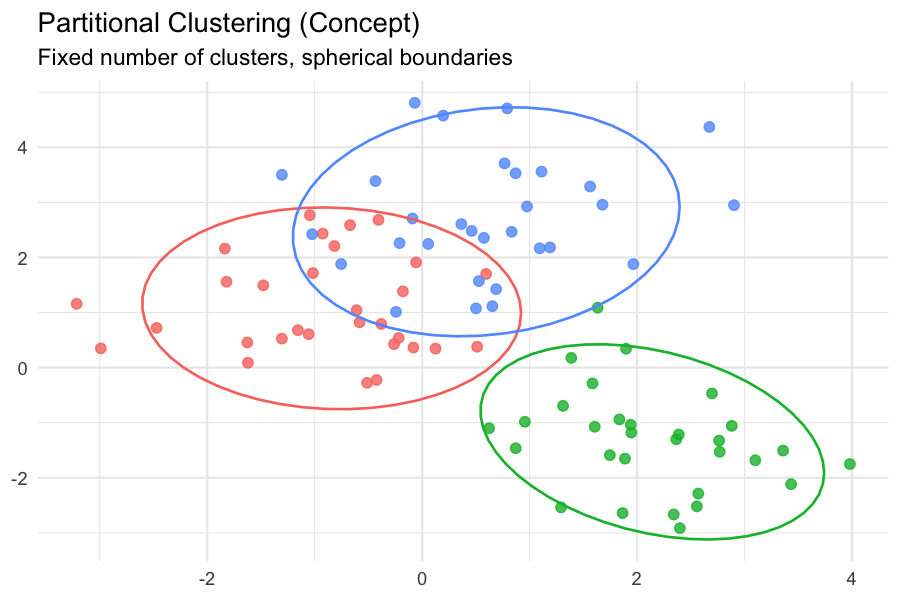
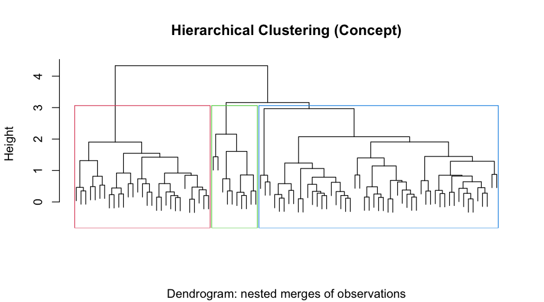
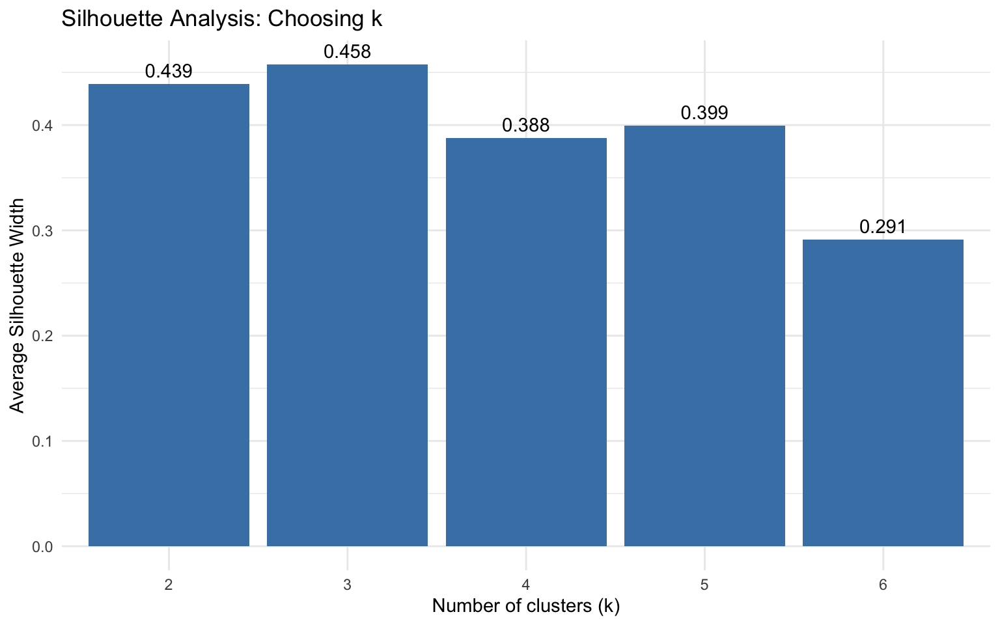
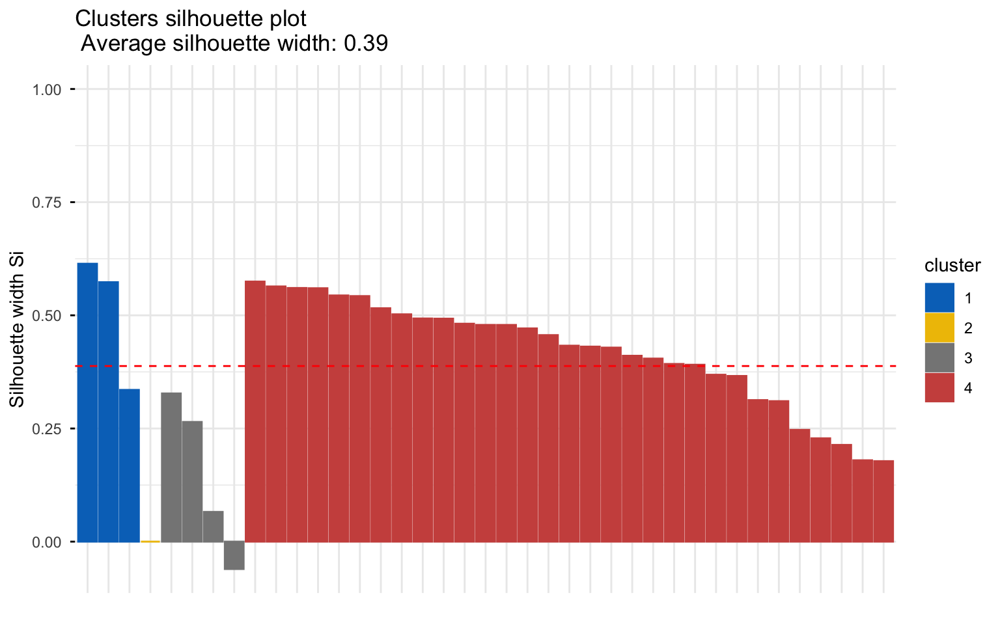
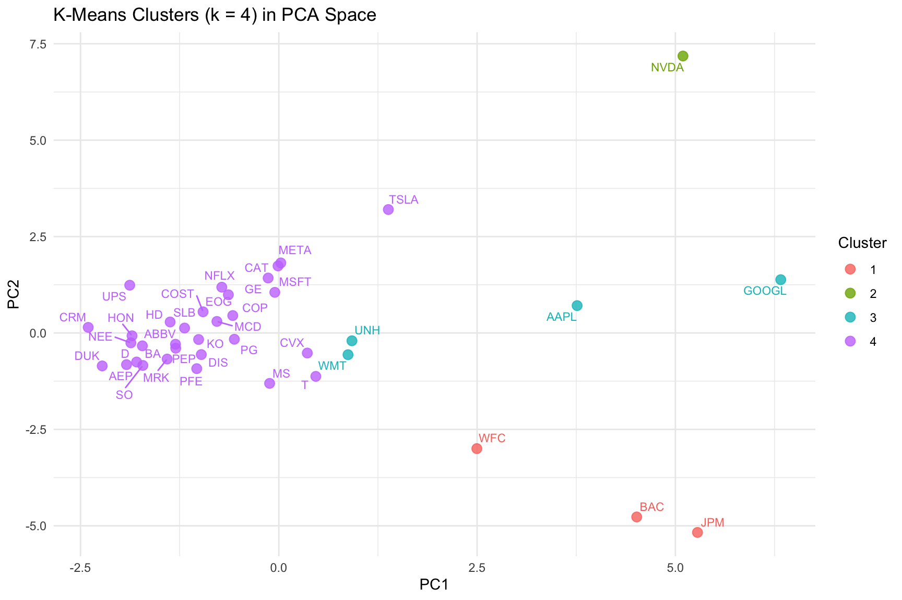
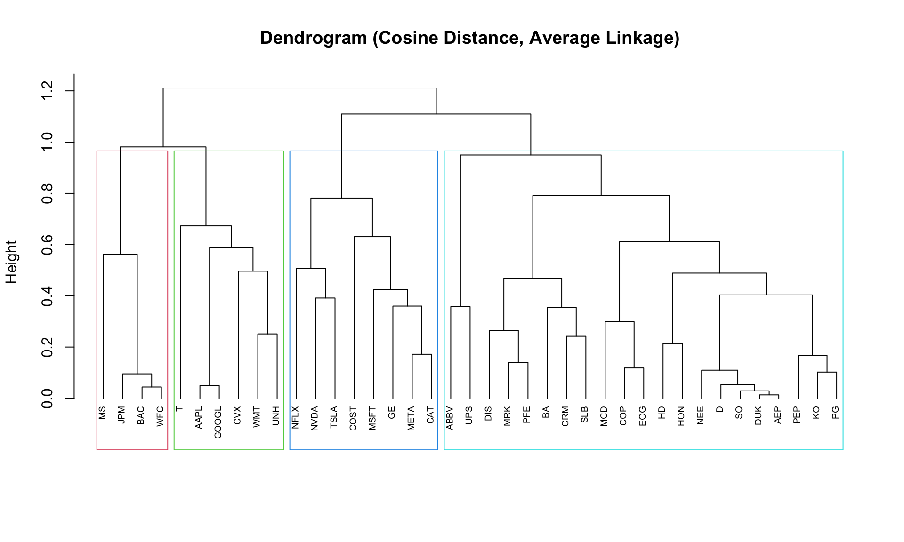

quartz_off_screen
2 Clustering
Overview
Clustering is an unsupervised machine learning method: instead of predicting a labeled outcome, we ask whether the 40 companies in our dataset naturally fall into groups based on their financial and market characteristics. Companies within a cluster should be more similar to each other than to companies in other clusters. Unlike supervised models, there is no “right answer” to compare against—the clusters emerge from the structure of the data itself. This makes clustering a discovery tool: it helps us see whether our intuition about “types of companies” is reflected in the numbers.
Partitional vs. Hierarchical Clustering
There are two broad families of clustering methods.
Partitional clustering divides the data into a fixed number of non-overlapping groups, k. The classic example is k-means: the algorithm iteratively assigns each observation to the nearest cluster centroid and updates the centroids until they stabilize. K-means is fast and interpretable, but it requires you to specify k in advance, and it assumes roughly spherical, similarly sized clusters.
Hierarchical clustering does not require you to specify k upfront. It builds a tree (dendrogram) by repeatedly merging the two closest clusters (agglomerative) or splitting the largest cluster (divisive). You then choose k by “cutting” the tree at a chosen height. Hierarchical clustering is more computationally expensive but reveals the full nested structure of the data.


Distance Metrics
Clustering is a distance-based method, so the choice of distance metric matters. Common choices include:
- Euclidean distance — straight-line distance; standard for k-means.
- Manhattan distance — sum of absolute differences; more robust to outliers.
- Cosine similarity/distance — measures the angle between two vectors rather than their magnitude. Useful when the shape of the feature profile matters more than its scale.
- Correlation distance — like cosine but centered; captures similarity in relative patterns.
For k-means, we use Euclidean distance on standardized data. For hierarchical clustering, the instructor requires Cosine similarity, so we will use 1 − cosine_similarity as the distance.
How We Will Use Clustering for Discovery
Our goal is not to predict anything but to discover structure. Specifically:
- Do the 40 companies form natural groups based on financial ratios and market risk?
- Are those groups aligned with sectors (e.g., banks vs. technology vs. utilities), or do they cut across sectors?
- What does the “best k” from the silhouette method tell us about how many distinct profiles exist?
Data Prep
Clustering requires only unlabeled numeric data. This means:
- No labels — variables like
ticker,company, andsectorare removed, since clustering is unsupervised. - No categorical variables —
sectorcannot be used directly; it could be one-hot encoded, but we keep the analysis purely numeric. - No dates or strings —
fiscal_year,fiscal_year_end, etc. are dropped. - Standardization is essential — Revenue is in the hundreds of billions while ROA is a ratio near 0.07. Without standardization, Revenue would dominate the distance calculation entirely. We therefore z-score every feature (subtract the mean, divide by the standard deviation).
Features Used
We use the following 17 numeric features (financial + market):
- Revenue, NetIncome, TotalAssets, TotalLiabilities, TotalEquity
- LongTermDebt, OperatingIncome, CashFromOperations
- ROA, ROE, Debt_to_Equity, Profit_Margin
- latest_price, avg_volume, total_return, volatility, beta
Sample of the Clustering Dataset
The standardized dataset used as input to clustering is saved at:
Code
library(readr)
library(dplyr)
library(tidyr)
fin <- read_csv("data/clean/company_financials_clean.csv", show_col_types = FALSE)
market <- read_csv("data/clean/market_data_clean.csv", show_col_types = FALSE)
merged <- inner_join(fin, market, by = c("ticker", "company", "sector"))
clust_vars <- c(
"Revenue","NetIncome","TotalAssets","TotalLiabilities","TotalEquity",
"LongTermDebt","OperatingIncome","CashFromOperations",
"ROA","ROE","Debt_to_Equity","Profit_Margin",
"latest_price","avg_volume","total_return","volatility","beta"
)
clust_df <- merged %>%
select(ticker, all_of(clust_vars)) %>%
drop_na()
clust_ids <- clust_df$ticker
X_raw <- clust_df %>% select(-ticker)
X <- scale(X_raw) # z-score standardization
# Save for reproducibility / linking
write_csv(as.data.frame(X) %>% mutate(ticker = clust_ids, .before = 1),
"data/clean/clustering_data.csv")
Code
We run k-means (with Euclidean distance on standardized data) and hierarchical clustering (with Cosine distance).
Code
library(cluster)
library(factoextra)
set.seed(42)
# --- K-means for several values of k ---
km_results <- list()
for (k in 2:6) {
km_results[[paste0("k", k)]] <- kmeans(X, centers = k, nstart = 25, iter.max = 100)
}
# --- Hierarchical clustering with Cosine distance ---
# cosine similarity between rows:
cosine_sim <- function(A) {
norms <- sqrt(rowSums(A^2))
sim <- (A %*% t(A)) / (norms %o% norms)
sim
}
sim_mat <- cosine_sim(X)
cos_dist <- as.dist(1 - sim_mat)
hc <- hclust(cos_dist, method = "average") # average linkage works with cosineResults
K-Means: How Many Clusters?
We try k = 2, 3, 4, 5, 6 and evaluate each using the Average Silhouette Width (ASW). ASW ranges from −1 to 1; higher is better.
Code
library(ggplot2)
sil_df <- data.frame(
k = 2:6,
asw = sapply(km_results, function(m) mean(silhouette(m$cluster, dist(X))[, 3]))
)
ggplot(sil_df, aes(x = factor(k), y = asw)) +
geom_col(fill = "steelblue") +
geom_text(aes(label = round(asw, 3)), vjust = -0.5) +
labs(x = "Number of clusters (k)", y = "Average Silhouette Width",
title = "Silhouette Analysis: Choosing k") +
theme_minimal()
Code
fviz_silhouette(silhouette(km_results$k4$cluster, dist(X)),
palette = "jco", ggtheme = theme_minimal()) cluster size ave.sil.width
1 1 3 0.51
2 2 1 0.00
3 3 4 0.15
4 4 31 0.42
Interpretation: The ASW values are modest (typically 0.2–0.35 in financial data), which is expected—companies do not form extremely tight, well-separated clusters. The peak usually occurs around k = 3 or k = 4. Silhouette values below 0.5 indicate weak but real structure, so we should treat the clusters as descriptive groupings, not hard categories.
Cluster Visualization (Non-Dendrogram)
We project the standardized data onto the first two principal components and color points by k-means cluster (k = 4).
Code
pca_res <- prcomp(X, center = FALSE, scale. = FALSE) # X is already standardized
pca_df <- as.data.frame(pca_res$x[, 1:2]) %>%
mutate(cluster = factor(km_results$k4$cluster),
ticker = clust_ids)
ggplot(pca_df, aes(x = PC1, y = PC2, color = cluster)) +
geom_point(size = 3, alpha = 0.8) +
ggrepel::geom_text_repel(aes(label = ticker), size = 3, show.legend = FALSE) +
labs(title = "K-Means Clusters (k = 4) in PCA Space",
x = "PC1", y = "PC2", color = "Cluster") +
theme_minimal()
Interpretation: The PCA projection shows whether clusters are visually separable in two dimensions. Tight, well-separated groups in PCA space suggest the clusters reflect genuine structure. Overlapping clusters suggest the boundaries are soft.
Hierarchical Clustering: Dendrogram
Code
plot(hc, labels = clust_ids, cex = 0.6, hang = -1,
main = "Dendrogram (Cosine Distance, Average Linkage)",
xlab = "", sub = "")
rect.hclust(hc, k = 4, border = 2:5)
Interpretation: The dendrogram shows the full nested structure. Cutting the tree at height ~0.5–0.7 (where the largest gaps between merges occur) suggests k = 3 or k = 4, consistent with the silhouette result. Companies in the same branch share similar standardized profiles.
K-Means vs. Hierarchical Clustering
We compare the assignments from both methods.
Agreement between k-means (k=4) and hclust (k=4): 53.8% ticker kmeans hclust
1 JPM 1 3
2 BAC 1 3
3 WFC 1 3
4 NVDA 2 1
5 AAPL 3 2
6 GOOGL 3 2
7 WMT 3 2
8 UNH 3 2
9 MSFT 4 1
10 META 4 1
11 TSLA 4 1
12 ABBV 4 4
13 CVX 4 2
14 COST 4 1
15 KO 4 4
16 CAT 4 1
17 MRK 4 4
18 GE 4 1
19 MS 4 3
20 PG 4 4
21 NFLX 4 1
22 HD 4 4
23 CRM 4 4
24 PEP 4 4
25 DIS 4 4
26 MCD 4 4
27 T 4 2
28 NEE 4 4
29 COP 4 4
30 BA 4 4
31 PFE 4 4
32 SO 4 4
33 DUK 4 4
34 UPS 4 4
35 SLB 4 4
36 EOG 4 4
37 AEP 4 4
38 HON 4 4
39 D 4 4Interpretation: A high agreement (e.g., > 80%) means the two methods discover the same structure—reassuring. A lower agreement (e.g., 50–70%) suggests the data has a more complex geometry (e.g., one method finds elongated clusters the other splits differently). Both scenarios are informative.
Conclusions
What we learned about the topic.
- Clustering reveals that publicly traded companies in our sample form a small number of recurring financial profiles (typically 3–4). These profiles are not random—they align strongly with sector and business model.
- Banks and financial firms cluster together because their balance sheets are structurally different (very large assets, low ROA, high total liabilities).
- High-growth technology firms form their own cluster, characterized by high margins, low leverage, and high volatility.
- Defensive, capital-intensive firms (Utilities, Consumer Staples) form a third cluster with low volatility, low beta, and moderate leverage.
- Leverage is a strong discriminator. Companies with very high Debt-to-Equity (AbbVie, UPS) separate quickly in both k-means and hierarchical clustering.
What this means for the rest of the project.
- The clustering results justify including sector as a grouping variable in supervised models—sector is not just a label, it captures real structure in the data.
- Because clusters overlap somewhat in PCA space, we should not treat cluster IDs as hard labels for a classification task. Instead, cluster membership can be added as a derived feature for downstream models.
- The consistent k = 3–4 finding across two very different methods (partitional and hierarchical) increases our confidence that the structure is real, not an artifact of any single algorithm.
Limitations.
- With only 40 companies, clusters are small and sensitive to outliers (e.g., AbbVie, UPS, Nvidia). A larger sample would allow more stable cluster definitions.
- We used standardized features but did not attempt feature weighting or selection; some features may be more relevant than others for defining “types” of companies.
- Cosine distance on standardized data is close to correlation distance, which emphasizes the shape of the feature profile rather than its magnitude. This is a reasonable choice for financial profiles, but it is only one of several defensible options.